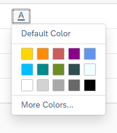
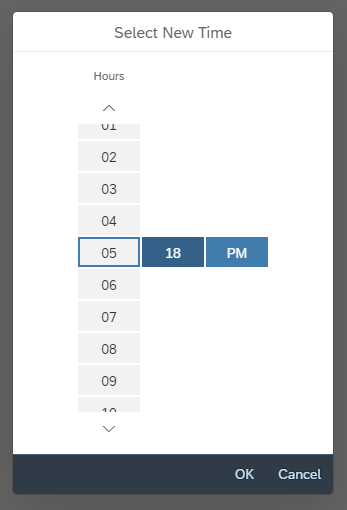
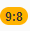
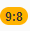

What's New in OpenUI5
1.54
What's New in OpenUI5
1.54
With
this release, OpenUI5 is
upgraded from version 1.52 to 1.54.
New Controls
sap.m.ColorPalette: Provides the user with a palette
containing up to 15 predefined web-standard colors, such as, Gold, Dark
Magenta, and White. You can enable a Default Color
button with a specified default color visible for the user. If the
predefined set of colors is not sufficient, you can enable a More
Colors button that opens
sap.ui.unified.ColorPicker. For
more information, see the API Reference and the Samples.
sap.m.TimePickerSliders: Enables the user to choose time, in
different formats, from the available lists in the sliders. The control can
be used inside any container. For
more information, see the API Reference and the Samples.
-
sap.tnt.InfoLabel: Small non-interactive control whose
purpose is to attract attention to a certain piece of information such as a
state, quantity, condition. The control is vertically aligned with the OpenUI5
Input and Button control
families.
InfoLabel has a renderMode
property with the values loose and narrow that
specify the side paddings. By default, the padding is loose, but for numeric
text values, use narrow paddings. The background and text color combinations are predefined. You can
choose from 9 color schemes where the text content and choice of color
depend on your preferences. The colorScheme property also
accepts a digit as a value.
The size of the InfoLabel control adjusts to fit other
controls, such as non-editable forms or tables, when the
displayOnly property is set to
true.
For
more information, see the API Reference and the Samples.
Improved
Features
Initialization Module for Bootstrap
You can now specify an initialization module that is loaded and executed after
the initialization of the core with the configuration parameter
onInit like
this:.
Hidden
<script src="/sapui5/resources/sap-ui-core.js"
id="sap-ui-bootstrap"
data-sap-ui-libs="sap.m"
data-sap-ui-oninit="module:sap/app/App"
data-sap-ui-resourceroots='{"sap.app": "my/local/path"}'
data-sap-ui-theme="sap_belize"></script>
manifest Property for Component
Containers
You can now also use the "Manifest First" mechanism for component containers. For
more information, see Using and Nesting Components.
OpenUI5
OData V4 Model
The new version of the OpenUI5 OData V4
model has the following features:
-
Enhancements to the adapter to use the V4 model with an OData V2
service:
-
Handling of complex filters with and,
or, not, brackets,
and frequently used functions including
contains.
-
Support for bound operations by evaluating the V2
annotation sap:action-for.
-
Additional annotation conversions and warnings (in the
console) for V2 annotations that are not converted.
-
Suspend and resume absolute context and list bindings. A suspended
binding will not send requests to the backend.
-
Possibility to refresh a single row in an absolute list binding.
-
Support of bound functions.
-
Newly created entities in an absolute list binding are
refreshed/reread automatically after the successful post to the
server.
-
It is now possible to request the x-csrf token and
the root metadata document earlier. This is controlled by model
parameter earlyRequests.
The
default value of earlyRequests is
false and this default may change in
the future.
-
Action advertisements can be accessed in bindings by specifying
#<namespace>.<action>
The previous method for metadata access is still available,
but we recommend using a double hash (##) syntax
instead.
Due to the limited feature scope of this version of the OpenUI5 OData V4
model, check that all required features are in place before developing
applications. Check the detailed documentation of the features, as certain
parts of a feature may be missing. While we aim to be compatible with
existing controls, some controls might not work due to small
incompatibilities compared to
sap.ui.model.odata.(v2.)ODataModel, or due to missing
features in the model (such as tree binding). This also applies to controls such as
TreeTable and AnalyticalTable, which
are not supported together with the OpenUI5 OData V4
model. The interface for applications has been changed for easier and more
efficient use of the model. For a summary of these changes, see Changes Compared to OData V2 Model.
For more
information, see OData V4 Model, the
API Reference, and the Sample in the Demo Kit.
Default Font
A new default font, the 72 font family that offers some legibility and
accessibility enhancements, has been implemented.
Make sure the settings in your application are correct and comply with the new
font, for example, texts are placed correctly and fonts are used
consistently.
Support Assistant Performance and Usability
Improvements
There are several improvements in the Support Assistant tool:
-
Better initial loading performance - now each library should have a
.supportrc file in its root folder. The purpose
of this file is to serve as a metadata container to be used by the
Support Assistant ruleset loader module.
For more information, see Create a Ruleset for a Library.
-
Improved perceived UI performance during initial tool loading –
achieved by early and dynamic rendering of the most important UI
elements and introducing a progress bar in the main screen of the
Support Assistant.
-
Improved usability:
-
The selection of rules to run an analysis has been
improved. Now, selecting a library selects all the rules
it contains.
-
The Issues and
Rules buttons are now
highlighted to show the user which view is active at the
moment.
-
The issue details in the Issues
view have been moved from the top to the bottom of the
window for better usability.

UI5 Inspector Updated
A new minor version 0.9.4 of the UI5 Inspector is available in the Chrome Web
Store with some code adjustments and the new OpenUI5 logo.
Improved Controls
-
sap.f.DynamicPage:
-
A new areaShrinkRatio property is now available for
the sap.f.DynamicPageTitle class. The property
assigns shrinking ratios to the three areas in the
sap.f.DynamicPageTitle (Heading, Content, and
Actions). The greater value a section has the faster it shrinks when
the screen size is reduced. For more information, see the API
Reference.
-
A new stateChange event is introduced for the
sap.f.DynamicPageTitle class. The event is
fired when the state of the title (expanded or collapsed) is toggled
by user interaction (by clicking/tapping on the title, by using the
expand/collapse button, or by scrolling down the
sap.f.DynamicPage content). For more information, see the API
Reference.
-
sap.f.FlexibleColumnLayout: A new
backgroundDesign property is added that specifies the
background color of the content. The visualization of the different options
depends on the used theme. For
more information, see the API Reference.
-
sap.m library for
List/ListBase, Table,
Tree controls and tables in
sap.ui.table: You can now use the context menu for
these controls. For
more information, see the API Reference for the
contextMenu aggregation, the API Reference for the
beforeOpenContextMenu event and the
Sample for
sap.ui.Table (and the same for
ListBase), the Sample for
sap.m.Table, and the Sample for
List.
-
sap.m library for List,
Table, Tree controls: You can now use
drag and drop for these controls with aggregation
dragDropConfig. For
more information, see the API Reference for the
dragDropConfig aggregation, the Sample for
Table, and the Sample for
Tree.
-
sap.m.CheckBox:
-
A new wrapping property is now available that
determines whether the text in the control's label is wrapped. When
set to false (default), the label's text is
truncated with an ellipsis at the end.
-
A new displayOnly property is added that enables
visually distinguishable rendering of the control in gray. When set
to true, the control becomes non-focusable and is
not part of the tab chain. The displayOnly state is
intended to be used in form controls only, and it is different from
the read-only state.
For more
information, see the API Reference and the Sample.
-
sap.m.DateTimeField: With the new
initialFocusedDateValue property, you can now set a
JavaScript Date object to define the initially focused
date/time when a picker popup is opened. This can be used in the context of
sap.m.TimePicker, sap.m.DatePicker, or
sap.m.DateTimePicker and it only takes into account the
time part, the date part, or both parts of the JavaScript
Date object, respectively. For
more information, see the API Reference.
-
sap.m.IconTabBar:
-
Updated drag and drop feature for visible tab areas - the drag
and drop feature has a new visual indication, including a drop
area indicator and a ghost element. The keyboard handling is
also updated.
Implemented drag and drop in the overflow area of
IconTabBar – the drag and drop feature is
added in the overflow list of sap.m.IconTabBar.
Rearranging tabs using the keyboard is also enabled in the
overflow.
For more information, see the API Reference and the
Sample.
-
sap.m.Label: A new vAlign property has been
added. It specifies the vertical alignment of sap.m.Label.
To preserve the current behavior of the control, the default value of the
property is inherit. From now on, app developers can set
vertical alignment of sap.m.Label with the
vAlign property using its get/set method, which accepts
values from the sap.ui.core.VerticalAlign interface. For
more information, see the API Reference.
-
sap.m.Link: A new validateUrl property has
been added that defines whether the link target URI should be validated. If
validation fails, the value of the href property will still
be set, but it will not be applied to the DOM tree. For
more information, see the API Reference.
-
sap.m.MessagePage:
-
With the new enableFormattedText Boolean property,
you can now enable the text that is set in the
description property to be rendered as
HTML.
The new property takes effect only when the
customDescription aggregation is not set.
For a list of supported HTML tags, see the API Reference for
sap.m.FormattedText.
-
A new buttons aggregation is implemented that allows
you to add buttons (of type sap.m.Button) to the
sap.m.MessagePage. The buttons are centered
under the description of the MessagePage. If more
buttons are added, and enough space is available , they will be
rendered on two or more lines.
For more
information, see the API Reference and the Sample.
-
sap.m.ObjectStatus: The control now has the option to have
an active icon and text so the user can click/tap on them. To do this, set
the new active property to true. There is
also a new press event that fires when the user clicks/taps
on active text/icon. For
more information, see the API Reference and the Sample.
-
sap.m.OverflowToolbar: The sap.m.Label
control is now added to the list of controls that can be moved to the
overflow area of sap.m.OverflowToolbar.
-
sap.m.PlanningCalendar:
-
A new getSelectedAppointments method is implemented
which holds the IDs of the selected appointments. If no appointments
are selected, an empty array is returned. This is an addition to the
appointmentSelect event and its
appointment parameter where you can listen
for
the value of the selected property. For more information, see the API Reference and the
Sample.
-
The control now provides the possibility for the user to drag and
drop appointments in one PlanningCalendarRow. You
can enable this behavior with the
enableAppointmentDragAndDrop Boolean property.
When an appointment is dropped over a drop target area, an
appointmentDrop event is fired. For more information, see the API Reference and the
Sample.
-
For large screens, the date navigation arrows are now displayed
closer to the date picker button to improve the experience of date
navigation in the sap.m.PlanningCalendar.
-
With the use of the new stickyHeader property, you
can now enable the header area to remain visible (fixed on top) when
the rest of the content is scrolled out of view. For more information, see the API Reference and the
Sample.
There is limited browser support, hence the
stickyHeader API is in experimental state. This
API should not be used in a production environment.
Until now, the appointments in
sap.m.PlanningCalendar were sorted vertically
according to their duration with the longer ones being on top. With
the introduction of the new API method
setCustomAppointmentsSorterCallback, you can
now sort the appointments in a custom way. For more information, see the API Reference and the
Sample.
-
sap.m.StepInput:
-
You can now add a description and align the text with the use of the
new properties: description,
fieldWidth, and textAlign.
With the description property, you can display text
after the input field. The fieldWidth property
specifies how much of the available space is taken from the field
and how much from the description (equal by default). The
textAlign property enables you to choose how
the numbers in the input field are aligned. For more information, see the API
Reference.
-
The control now increases the speed in which the value changes when
the user presses and holds the increase or decrease buttons.
-
With the new stepMode property, you can now decide
which calculation method to use for the value when
the user chooses the increase/decrease buttons. The
AdditionAndSubtraction type simply
adds/subtracts the current step to/from the
value, while the Multiple type
increases/decreases the value to the closest number
that is divisible by the step. For more information, see the API Reference and the
Sample.
-
sap.m.TimePicker:
-
You can now set not only a 00:00 time value but also
24:00 if you need the time to represent the end
of the day. To enable this option, set the new
support2400 Boolean property to
true. For more information, see the API Reference and the
Sample.
-
With the use of the new maskMode property, you can
now disable the assistance that is provided for the
sap.m.TimePicker input. This enables variable
length time formats, for example AM/PM formats in different
languages. For more information, see the API
Reference.
-
sap.m.Toolbar: A new style property has
been added that defines the visual style of the
sap.m.Toolbar. The available styles are theme-dependent
and can differ based on the currently used theme. For
more information, see the API Reference and the Sample.
-
sap.m.WizardStep: A new Boolean property called
optional has been added. When set to
true, it marks a step with the text “Optional” under
the step’s title. The new property only affects the visual appearance of the
step and does not provide any behavioral changes to the control. For
more information, see the API Reference.
-
sap.ui.layout.form.Form: Labels in form controls are now
wrapped automatically using the wrapping property of
sap.m.label. This prevents long labels from being cut
off. For more information, see the Sample.
-
sap.ui.table.TreeTable: You can now expand and collapse
multiple rows at once. For
more information, see the API Reference for
expand and the API Reference for
collapse and the Sample.
-
sap.ui.unified.CalendarLegend: With the use of the new
standardItems property, you now have the option to
configure which of the standard items related to the calendar days
(today, selected,
working, and non-working) to display.
For more information, see the API Reference and the Sample.
-
sap.ui.unified.Currency: The new
stringValue property enables you to display very large
numbers (16+ characters) without losing precision. For
more information, see the API Reference and the Sample.
Documentation
We have a new tutorial: OData V4.
We have reworked the Data Binding section
under Essentials.
We received feedback that many examples throughout the documentation were outdated
and still used the old OData model, the deprecated sap.ui.commons
library, or used the deprecated jQuery.sap.require syntax. We are
currently working on updating all the occurrences, and you may already notice that
we have made a big step forward in this version. Nevertheless, there will still be
topics we could not yet update - please be patient and allow us some more time to
finish this task.
Demo Kit Improvements
Information about downloading OpenUI5 can now
be accessed easily through the new Download button on
the home page:

A new API Reference button is now available when a
sample page is loaded. It links directly to the control's API
information:

In the API Reference, information is now available if
an aggregation is used by default:

-
Browser back button functionality is available for the API
Reference as the navigation steps are now persisted in the
browser history.
-
Performance improvements: We have enabled lazy loading for the methods in the
API Reference and implemented other various
optimizations. The performance of the app has improved as a result.
 
